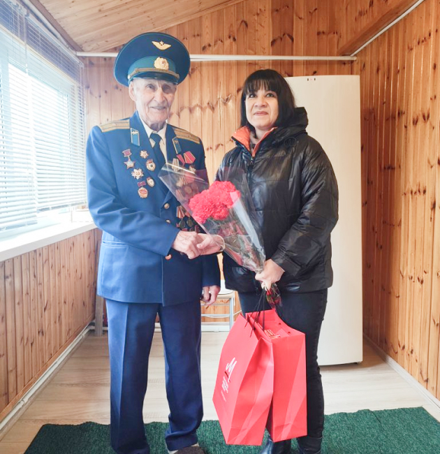
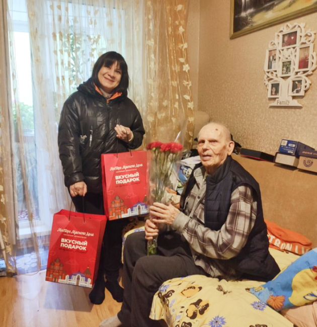
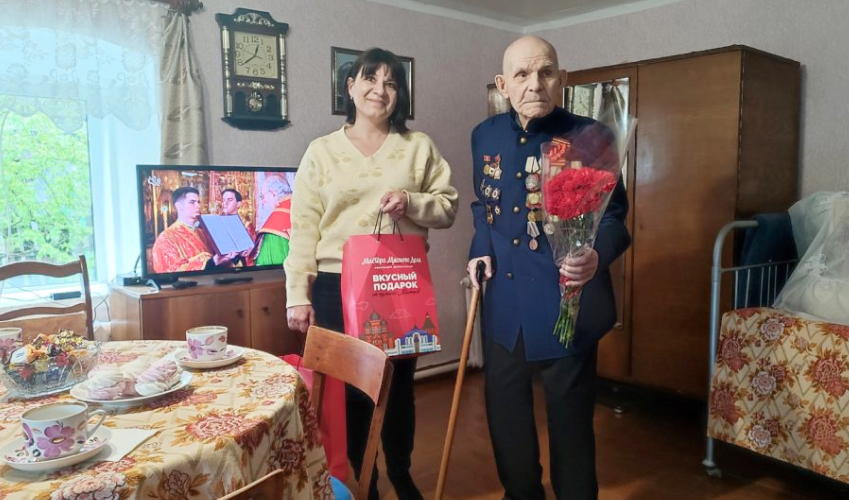

с днем победы!
Накануне праздника Великой Победы сотрудники нашего предприятия посетили старейших ветеранов Тулы и области.
Мы познакомились с нашими героями еще в 2022 году. Тогда мы отправились к ним в гости впервые. Слушали невероятные рассказы о военной жизни, о бесконечных боях, о подвигах, которые совершали обычные люди и простые солдаты во имя жизни, во имя будущего своей страны и всего Мира, во имя будущих поколений. Мы восхищались внутренней силой этих людей, их твердой волей и полной самоотверженностью. Победа была нужна любой ценой! Разве можно было победить советский народ с таким могучим духом?
Сейчас наши встречи переросли уже во что-то большее, живое и очень душевное… Передать словами сложно. Нас встречали как самых близких и любимых родственников или как своих боевых товарищей, разделивших, пусть и спустя годы, память о войне, радость Победы и уверенность в том, что теперь уже мы — молодые поколения — не допустим существования коричневой чумы на Земле.
Василий Алексеевич Денисов (Н2)
Василию Алексеевичу Денисову 98 лет. Живет в Туле. Попал на фронт в 1943 году 17- летним мальчишкой. До конца войны выполнял боевые задачи в секретном разведывательном летном полку. Его военная выправка и сейчас вызывает восхищение.
Ежегодно он самостоятельно посещает все мероприятия, посвященные Великой Победе. Присутствует на митингах Памяти и возложении цветов, принимает у себя гостей с поздравлениями.
Каждый год желающих посетить ветерана все больше. В этот раз даже очередь была). С поздравлениями пришли школьники и ожидали приезда оркестра, чтобы вместе с Василием Алексеевичем прошагать «Марш Победы». Мы не стали ждать оркестр и прошли вперед. Вручили цветы, гостинцы и подарки от нашего «Города Мастеров», выразили глубокую благодарность, пожали руки, низко поклонились и обнялись. Мы взяли обещание, что в следующем году Василий Алексеевич обязательно нас встретит снова.
Кобылянский Виталий Архипович(Н2)
Кобылянский Виталий Архипович также живет в Туле.14 апреля 2024 года ему исполнилось 102 года. Виталий Архипович сейчас не может обойтись без посторонней помощи. Возраст дает о себе знать. За ним ухаживает дочь Людмила Витальевна. С ее помощью Виталий Архипович выходит на улицу на небольшие прогулки.
Мы поздравили Виталия Архиповича лично, вручили цветы и гостинцы, передали привет от всех сотрудников «Города Мастеров» со словами огромной благодарности и низким поклоном. Ветеран пожелал нам всем чистого голубого неба над головой и мира на всей Земле.
Михаил Яковлевич Рыбкин(Н2)
Узловский район Тульской области, деревня Ракитино. Здесь живет ветеран Великой Отечественной войны Михаил Яковлевич Рыбкин.15 июня Михаилу Яковлевичу исполнится 107 лет!
Нас ждали за накрытым столом. Мы пили чай и слушали воспоминания о войне. Дочь Нина Михайловна живет там же, в Ракитино, поэтому Михаил Яковлевич всегда под присмотром, а вторая дочь приехала в гости, чтобы отпраздновать День Победы в этом году всем вместе. Священный семейный праздник! Обязательно приедут внуки и правнуки.
В канун праздника дом наполняется не только близкими родственниками, но и другими многочисленными гостями. К Михаилу Яковлевичу приходят с поздравлениями из местной администрации, областной, из школ и других учебных заведений, поздравляют представители обществ и комитетов ветеранов ВОВ, приезжают для интервью, для съемок и т. д. Его неоднократно показывали по телевидению и писали о его подвигах в различных газетах.
Удивительный рассказчик. Он помнит фамилии всех своих командиров, а о событиях многолетней давности повествует так, словно это все было вчера. Мы расставались как давние добрые друзья. Договорились, что в следующем году на 80-летие Великой Победы обязательно вместе опрокинем боевые 100 грамм).
С пожеланиями долгих лет жизни, мира и добра, со словами благодарности от имени всех ныне живущих потомков мы с огромной теплотой в сердце и трепетом в душе отправились в обратный путь.
Низкий вам поклон, дорогие ветераны, долгих лет мирной счастливой жизни. Дорогого стоит возможность общения с вами сегодня, возможность лично выразить глубочайшую благодарность за пройденный путь героев и Великую Победу! Это огромная честь и неоценимая награда для нас, потомков.
С Днем Победы!!!